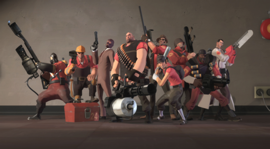

Про саму игру
а также её механики
ТФ2, или же Тим Фортрес 2 - это командая игра в которой не важен твой скил или удача, здесь все зависит от командной игры, которой добится давольно тяжело. Суть игры заключаеться в том, что-бы победить своего соперника, точнее команду твоего соперника. Всего команд 2 - Это красыне и синие.
В Тим фортресе очень много различных механик, начинаю от невидимости и максировки Шпиона - заканчивая Рокэт-Джамп у Солдата и у Подрывника
Механики различных классов
- Разведчик - быстрый бег и двойной прыжок
- Солдат - Рокэт-Джамп
- Поджигатель - возможность оталкивать вражиские снаряды с помощю зжатого воздуха
- Подрывник - Рокэт-Джамп, но уже на бомбах липучках.
- Пулеметчик - Очень большой дамаг и ХП компенсируеться скоростю та точностю
- Инженер - нереально большой дамаг от турели, телепорты и раздачик который может пополнять ХП и Патроны
- Медик - может лечить союзников, тем самим накапливая УБЕР-ЗАРЯД который дает либо Неуязвимость ко всем снарядам, либо Гарантированые криты
- Снайпер - имеет большой дамаг выстрелом в голову, очень уязвим к шпионам
- Шпион - может становиться невидимым, также может замаскироваться под любого персонажа на поле-боя как под врагов, так и под союзников, может отключать турели с помощю жучка